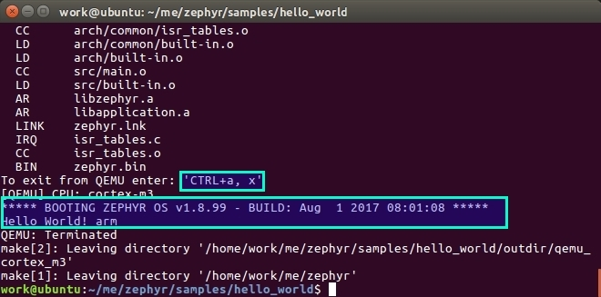

作者：tidyjiang8
如果对 Linux 有一点基础的话，建议使用 Linux 作为开发环境。我们这里以 Ubuntu 为例。
如果你的操作系统是 win10 的话，可以直接使用 win10 的 Ubuntu 子系统，再也不需要笨重虚拟机了，非常方便，感谢微软的努力。具体过程请参考教程 使用Win10的Liux子系统搭建Zephyr OS开发环境。
如果你自己没有 Ubuntu 系统的话，可以直接使用我提供的 Ubuntu 硬盘镜像快速搭建开发环境。在这个硬盘镜像里，我已经安装好了所有环境，你只需要导入一下就可以了。具体过程请参考 使用预安装Ubuntu硬盘镜像快速搭建Zephyr OS开发环境。
安装依赖的软件包
|
安装 SDK
Zephyr 的 SDK 中包含编译 Zephyr OS 源码的各种工具链以及一些主机工具。进入官方仓库 zephyrproject-rtos/meta-zephyr-sdk
，下载后缀为 .run 的最新 SDK。当前的最新版为 Zephyr SDK 0.9.1。
可以直接使用命令进行下载：
下载完成后，先添加可执行权限，然后进行安装：
默认会安装在
/opt/zephyr-sdk-xxx/下面，建议直接使用这个默认的安装路径即可。
安装完成后，配置一些与 Zephyr 相关的环境变量：
下载 Zephyr 源代码
直接下载
- 最新开发分支的代码：https://github.com/zephyrproject-rtos/zephyr/archive/master.zip
- 最新稳定分支 v1.8.0 的代码：https://github.com/zephyrproject-rtos/zephyr/archive/zephyr-v1.8.0.zip
Git 下载
|
编译 hello-world
除了在上面配置的那两个环境变量外，Zephyr 编译应用程序还需要一些额外的变量，这些变量是使用脚本文件 zephyr-env.sh 来设置的。先进入 Zephyr 根目录，然后配置环境变量：
进入 hello-world 目录，编译：
上面的 make 命令会使用应用程序的 Makefile 文件中定义的默认设置编译 hello_wolrd 例程。你可以定义环境变量 BOARD 为所支持的其它板子编译应用，例如：make BOARD=arduino_101。关于 make 命令的具体使用方法可以执行 make help。
对应用程序进行配置
Zephyr 提供了一个图形化配置界面 menuconfig。你可以在编译应用程序前使用该工具选择你所需的功能：

关于 menuconfig 的详细用法，请参考：https://www.zephyrproject.org/doc/application/application.html#overriding-default-configuration。
使用 QEMU 仿真
Zephyr 支持在 x86、ARM Cortex-M3 和 Xtensa 等多种架构下使用 qemu 进行仿真。
对 x86 架构进行仿真：
对 ARM Cortex-M3 架构进行仿真：
对 Xtensa 架构进行仿真：

仿真结果
退出仿真界面的方法：先按 CTRL+a，再按 x。